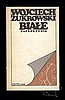
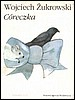
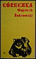
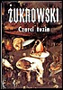
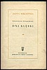
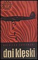
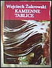
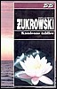
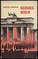
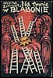

← Powrót do działu „Zdjęcia”
Galeria okładek książek
Archiwalna kolekcja okładek w nowym, spójnym układzie strony.

Białe zaproszenia
Pozycja 1 z 33

Córeczka
Pozycja 2 z 33

Córeczka
Pozycja 3 z 33

Czarci tuzin
Pozycja 4 z 33

Dni klęski
Pozycja 5 z 33
Dni klęski
Pozycja 6 z 33

Dni klęski
Pozycja 7 z 33
Kamienne tablice
Pozycja 8 z 33

Kamienne tablice
Pozycja 9 z 33

Kamienne tablice
Pozycja 10 z 33

Kirunek Berlin
Pozycja 11 z 33

Na tronie w Blablonie
Pozycja 12 z 33